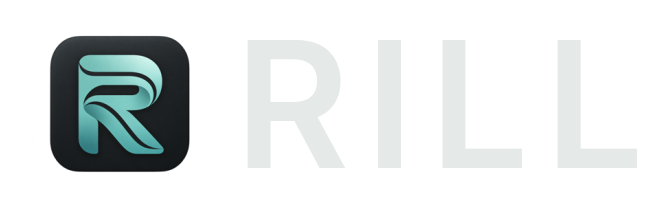

Arrange the song.
Organise tracks with colours and folders. Move and trim clips, with non-destructive editing and undo.

ALPHAA free, open-source music workstation
Record audio, write MIDI and mix with your VST3 plug-ins. Free and open source, with an optional AI assistant.
macOS · Windows · Linux MIT licensed
 Arrangement · Audio and MIDIActual RILL interface · View full size ↗
Arrangement · Audio and MIDIActual RILL interface · View full size ↗Record a performance, import audio or start with the included drum loop. Arrange audio and MIDI clips on the same timeline.
Organise tracks with colours and folders. Move and trim clips, with non-destructive editing and undo.
Record audio or MIDI in a loop, then choose the takes you want to keep.
Save a .rill project with its source audio. Export a stereo WAV or MIDI.
Draw notes, adjust velocity and use scale highlighting. Generate a chord progression or arpeggio, then edit the result in the piano roll.
 Piano rollView full size ↗
Piano rollView full size ↗Trim clips, add fades, change gain and apply processing without changing the original recording.
 Audio editorView full size ↗
Audio editorView full size ↗Ask the assistant to create a MIDI part, edit a phrase or adjust the mix in your open project. Review its changes and undo them when needed.
“Create a four-bar D-minor arpeggio using one of my installed VST3 instruments.”
Example request. Results depend on the connected model.
Choose OpenAI or Anthropic and connect your own API key. Requests go to your chosen provider; their usage charges may apply. The assistant is optional. External AI clients can connect to the live song through MCP.
Assistant and MCP setup ↗ AI assistantExample prompt, before sending ↗
AI assistantExample prompt, before sending ↗Set levels and pan, route channels through buses and sends, and automate parameters. VST3 plug-ins run in separate processes.
 Mixer · Instruments, effects and routingView full size ↗
Mixer · Instruments, effects and routingView full size ↗Free alpha builds for macOS, Windows and Linux. Each link serves the latest successful build.
Alpha software. Builds are unsigned; macOS builds are not notarized. Keep backups of important projects.
Choose your Mac’s processor.
Apple silicon Download for Intel ↓Move Rill.app to Applications.Windows 10 or 11 · x86-64.
Download for Windows Extract the complete package and run rill.exe.glibc 2.35 or newer.
Download for x86-64 Download for arm64 ↓Extract the complete package and run ./rill.Extract the downloaded ZIP, then the platform archive inside. Keep the application and its daw-plugin-host helper together; keep the macOS app bundle intact. Each package includes a SHA-256 checksum and installation notes. Install VST3 instruments and effects separately, matching the application’s architecture.
Full platform requirements ↗These are rolling alpha builds from the main branch, not a stable release. A newer build can be in progress while the links serve an earlier successful build. Artifacts expire after 14 days.
View successful builds on GitHub ↗Found a bug or missing a feature? Send us the details or open an issue on GitHub.
Get in touch ↗